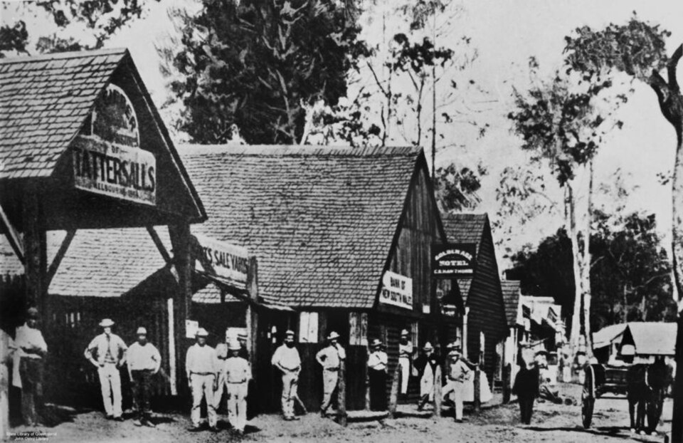
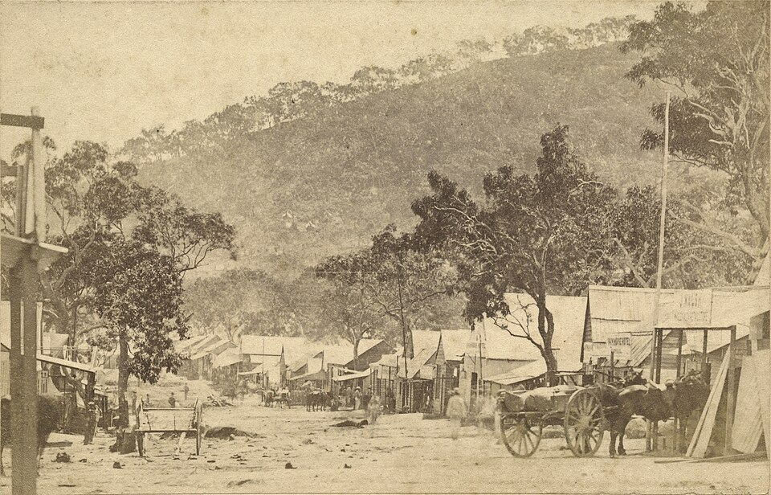
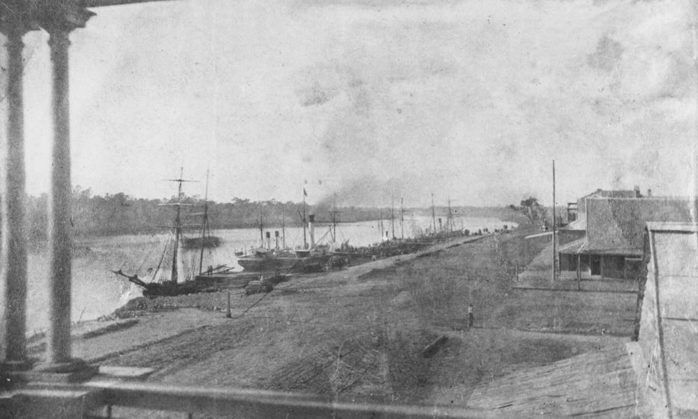
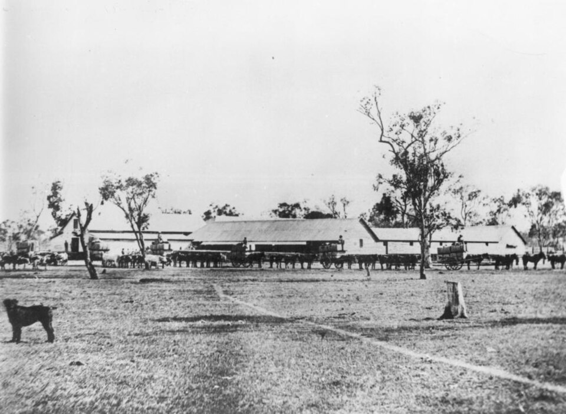
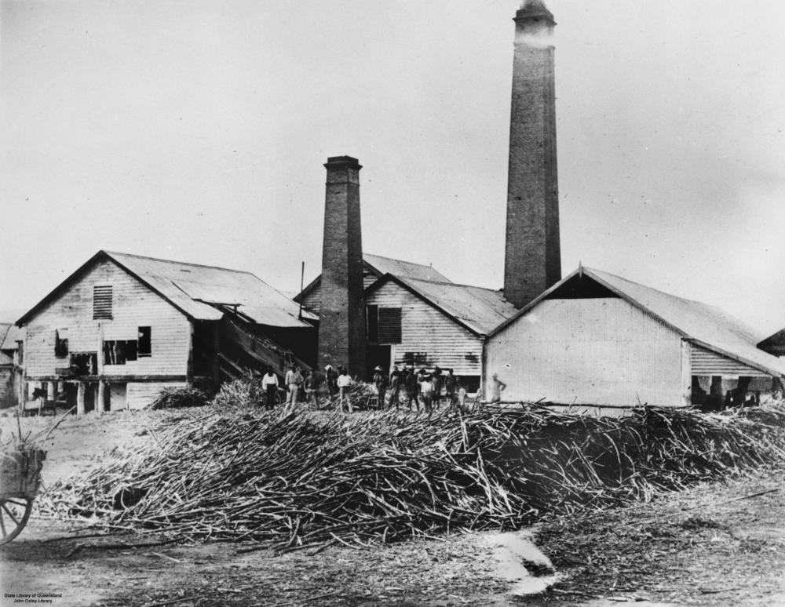

Queensland · 1840 to 1908
History
Four information banks about Queensland’s past. Each one has a timeline, places, people, real lives and its sources, and each shows where the sources disagree.
Time Travel Native Police Gold Rushes Grass Rush Sugar and South Sea Islanders
Mary Street, Gympie, 1868. Credit: John Oxley Library, State Library of Queensland (public domain). Image page

New · Time Travel on Country
Queensland Time Travel
Travel back to four eras of Queensland history. In each one you take the place of an invented person and choose a path. Then you come back to the present and read what really happened, with the sources and a link to the information bank.
- 1 The Grass Rush
- 2 The Native Police
- 3 The Gold Rush
- 4 The Sugar Story
It goes with the book Walking on Ancient Ground (Time Travel on Country). A teacher version, with discussion answers, is available. Please email me for the link.
Content warning. This app may contain names and images of deceased Aboriginal, Torres Strait Islander and South Sea Islander people. It has not yet been reviewed by Traditional Owners or community groups.


What these are
Each information bank is a non-fiction guide for interest and for the classroom. It gives the bigger picture of what was happening at the time, using records, historians’ research and archives. It names real people only, and it says where the sources disagree. The images are old public domain photographs, and each is credited. There are no AI images.
Cultural content warning
These resources may contain names and images of deceased Aboriginal, Torres Strait Islander and South Sea Islander people. They say that frontier violence, racism and forced removal happened. They do not describe violence in detail.
They have not yet been reviewed by Traditional Owners or by community groups. Teachers, please seek advice from the Traditional Owners and community groups of your area before using them in class.

The Native Mounted Police was a force of Aboriginal troopers led by white officers. Its main work was to answer settlers’ requests to “disperse” Aboriginal people in newly settled districts. The records were written almost entirely by officers and settlers, so very little is known from the troopers themselves. The information bank includes the 1863 petition of a trooper named Georgey, in his own recorded words.
Content warning. This topic is about frontier violence. It may contain names and images of deceased Aboriginal and Torres Strait Islander people. It has not yet been reviewed by Traditional Owners.
A teacher version, with discussion questions and suggested answers, is available. Please email me for the link.
Gold was found in Queensland many times between 1858 and 1877. Each time thousands of people travelled to the new field, and each field was on Aboriginal Country. Many diggers were British or Irish, and many were Chinese. On the Palmer River there were about 17,000 Chinese and 1,400 Europeans by 1876. The information bank also covers the laws that made Chinese miners pay more, and what happened to Aboriginal people on the goldfields.
Content warning. This topic says that violence against Aboriginal people and racism against Chinese people happened. It names people who have died. It has not yet been reviewed by Aboriginal community members.
A teacher version, with discussion questions and suggested answers, is available. Please email me for the link.

From 1840 squatters took up runs on grassland that Aboriginal people had managed for thousands of years with a burning season. They grazed sheep, and later cattle. The information bank covers conflict on the Downs, the Native Police, the land laws, the move from sheep to cattle at stations such as Gracemere, the shearers’ strike of 1891, and the Federation Drought, which ended the squatters’ era.
Content warning. This topic mentions places where people died, and says that violence against Aboriginal people and violence against settlers happened. It has not yet been reviewed by Aboriginal community members.
A teacher version, with discussion questions and suggested answers, is available. Please email me for the link.

From 1863 about 50,000 Pacific Islanders were brought to Queensland on contracts, mostly to work in the sugar fields. More than 14,564 died in Queensland between 1868 and 1906. The Pacific Island Labourers Act 1901 led to deportations in 1906 to 1908. The information bank covers the labour trade, the sugar districts, the Islanders who stayed and organised, and the Aboriginal people of the sugar country.
Content warning. This topic is about the labour trade (often called blackbirding), deaths from disease and deportation. It may contain names and images of deceased Aboriginal, Torres Strait Islander and South Sea Islander people. It has not yet been reviewed by Australian South Sea Islander community groups or Traditional Owners.
A teacher version, with discussion questions and suggested answers, is available. Please email me for the link.
Contact
For the teacher versions or questions about the books, please email me.